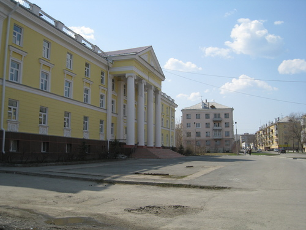

Центр детского творчества Google Maps
В 1957 году страна с размахом отмечала 40-летие Октябрьской революции, а молодому городу, в трудные послевоенные годы родившемуся в уральской тайге вокруг предприятия, ставшего ядерным щитом России, исполнилось 10 лет. Тогда-то, наряду со строительством важнейших социальных объектов - Дома культуры, кинотеатра, здания института и техникума – был возведён Дворец пионеров. Лучшего подарка детям нельзя было придумать! По договорённости со свердловскими художественными мастерскими летом 1958 года известный уральский художник Геннадий Мосин расписал по мотивам сказов Бажова знаменитую Комнату сказок. Активно помогали при сдаче объекта шефы – сразу 8 заводских цехов! Первым директором нового учреждения стала Алевтина Петровна Кузнецова. 1 сентября 1958 года Дворец торжественно распахнул свои двери для детей.
Через два года вопрос «О работе Дворца пионеров в 1959-60 учебном году» был вынесен на заседание исполкома горсовета депутатов трудящихся. Принятое решение гласило: «Дворец пионеров занимает главное место в проведении массовых городских мероприятий со школьниками, однако еще не стал методическим центром пионерской работы в городе». Исполком обязал директора Валентину Яковлевну Суханову обеспечить ведущую роль Дворца пионеров во внешкольной работе, повысив качество массовых мероприятий «по организованности, содержательности и воспитательному воздействию на детей». Поставлена задача расширить состав кружков (их всего 14 с охватом чуть более 300 учащихся). Особое внимание следовало обратить на художественное воспитание и техническое моделирование, а также подготовку пионеров-инструкторов для руководства школьными кружками. Рекомендовано развернуть краеведческую и туристскую работу («положить начало созданию местного краеведческого музея»), регулярно «показывать достижения детей путем организации выставок и отчетных вечеров». А главное – установить «повседневную деловую связь со школами» по вопросам организации семинаров для вожатых и пионерских активов школ.
В начале 60-х во Дворце пионеров работали уже 22 кружка, детская библиотека. Полтысячи ребятишек на практике осваивали музыкальное и театральное искусство, швейное и столярное дело, судо-, авто- и авиамоделирование, радиотехнику, игру в шахматы. Среди самых массовых – кружок фотолюбителей (руководитель М.А. Козлов), драматический и танцевальный кружки (М.А. Некрасова, М.А. Верховова), кружок баянистов (В.А. Ляпунов), «Умелые руки» (З.Н. Сарыцина), акробатика (М.А. Чиркова за 5 лет воспитала 147 разрядников!). В это же время инструктором по работе со школьными пионерскими организациями стала В.П. Дятлова, которую по праву называют «пионерской легендой» города. Люди старшего поколения с теплотой вспоминают парады и костры на Большой поляне в честь Дня пионерии 19 мая, походы по Уралу, работу «Пионерского кинотеатра», концерты в школах, на агитплощадках, в воинских частях.
В 1968 г. большая часть третьего этажа отведена под студию изобразительного искусства, на базе которой проходили семинары для учителей ИЗО, встречи художников города. Через 5 лет основной состав студийцев влился в число учеников Детской художественной школы, открытой в 1973г., ее директором был назначен руководитель изостудии Дворца пионеров А.В. Петухов.
В 1969 г. под руководством Ю.П. Казакова был создан ансамбль пионерской песни и пляски, объединивший хоровой и танцевальный коллективы, оркестр народных инструментов. С участием чтецов из драмкружка ансамбль ежегодно готовит большие театрализовано-музыкальные композиции («Дети рядом с отцами», «Мы на марше», «Прогулка по городу» и другие). Выступления юных артистов не раз транслировались по местному радио и телевидению.
В 1974 г. технические кружки обрели свой дом: открылась Станция юных техников. Был создан Совет содействия СЮТ, в который вошли представители ГК КПСС, ГК ВЛКСМ, ВОИР, комбината «Электрохимприбор» (большую помощь в оснащении кружков оказал отдел 083). Первым директором Станции назначен В.М. Шмаков. Впоследствии для популяризации технического творчества немало сделали директора В.Т. Хабаров, В.А. Краснослободцев, А.А. Казаков, А.Д. Хребтов. Если поначалу на СЮТ работали 5 кружков, то уже через 4 года - 14. Ежегодно устраиваются выставки, встречи с изобретателями и рационализаторами, семинары для учителей технического труда. Одной из первых на областные соревнования стала выезжать команда судомоделистов под руководством В.А. Яковлева: Иван Проничев стал призером в классе моделей яхт. Сергей Южаков, воспитанник А.А. Казакова, - первым чемпионом области по картингу. После возвращения в город бывших кружковцев С.А. Савухина и А.П. Алексеева, уже окончивших авиационные вузы и ставших мастерами спорта СССР, началась летопись славных побед авиамоделистов.
В 70-е годы в кружках Дворца пионеров занимались уже более тысячи детей. Здесь же – центр школьного общественного движения. Активно работали городские октябрятский, пионерский и комсомольский штабы. Проводились учебы актива, слеты правофланговых и трудовых отрядов, «Зарницы», смотры строя и песни, конкурсы комсомольских агитбригад. Активисты и лучшие кружковцы награждались путевками в туристические поездки по городам Советского Союза, в знаменитые «Артек» и «Орленок». Методисты-организаторы тех лет – М.П. Барышева, Л.П. Ханина, В.П. Котенева, Т.Л. Демина, Л.В. Вялкова, Н.С. Сагдиева, Е.С. Бокина. На празднике в честь 20-летия Дворца пионеров директор Раиса Адамовна Богатырева объявила результаты операции «Поиск», в которой активное участие принял Совет Дворца – орган детского самоуправления. Еще через 5 лет исполком горсовета, горкомы партии и комсомола поздравили коллектив Дворца с 25-летием: «Четверть века вы несете детям радость приобщения к полезным делам, к романтике пионерских костров и походов».
В 80-е крепнет сотрудничество Дворца пионеров с шефами – прежде всего, цехом 220: принимались взаимные обязательства, составлялся план совместных мероприятий. По инициативе методиста Ю.В. Овсянникова зародилась традиция совместных многодневных походов краеведческого кружка и хоровой студии по приискам региона, по маршруту Ермака, по уральским горам. «Краехоры» значительно пополнили фонды городского музея.
В начале 90-х, вслед за изменениями в стране, происходит коренная перестройка и системы внешкольной работы с детьми. В 1992 г. Дворец пионеров реорганизован в учреждение дополнительного образования - Центр детского творчества. В его состав - как технический отдел - входит Станция юных техников. Возглавила ЦДТ Ольга Николаевна Галушкина. Основная задача нового времени – разработать образовательные программы детских объединений по всем направлениям деятельности Центра.
Яркой приметой 90-х стал выход детских творческих коллективов на российский и международный уровень. Первым в городе «прорубил окно в Европу» фольклорный ансамбль «Забавушка» под руководством Н.В. Черновой: в 1996 г. коллектив принял участие в ХХХХII Международном фольклорном фестивале в Словакии. Эстафету подхватили театральная и хоровая студии, эстрадный оркестр - конечно, при весомой поддержке администрации Лесного, Управления образования, спонсоров и, безусловно, родителей.
В 1996 г. коллектив возглавила Ирина Альбертовна Власова. Под ее руководством была разработана первая Программа развития ЦДТ на 1999 – 2002 гг. В настоящее время принята и реализуется Программа развития МБУДО ЦДТ на 2016 – 2020 годы.
Сегодня Центр детского творчества – самое крупное в Лесном учреждение дополнительного образования: в 33 объединениях занимаются более 1300 детей и подростков. Среди воспитанников ЦДТ – чемпион Европы по авиамоделизму среди юниоров Михаил Колобов, лауреат премии Президента РФ Екатерина Жиронкина, лауреаты премии Губернатора Свердловской области Дмитрий Бадьин и Елизавета Пономарева, первый в городе мастер спорта РФ по боксу Альберт Абдулов. Выпускники Центра поступают в вузы по профилю занятий: информатика, журналистика, астрономия, музыка, театр, хореография, автомобилестроение, авиация, биология, география, дизайн, социальная педагогика. Многие выпускники не прерывают связь со своим «вторым домом», активно участвуют в жизни родных объединений.
На протяжении многих лет развиваются традиции сотрудничества со школами и другими социальными партнерами: ЦДТ является организатором многих межшкольных акций и конкурсов под эгидой городского фестиваля «Выше радуги» и в рамках областного фестиваля «Юные интеллектуалы Среднего Урала». Большой популярностью среди школьников Лесного пользуются городской туристский слёт, Рождественский бал старшеклассников, Интеллектуальные игры старшеклассников, праздники «Высший класс!» и «Последний звонок».
Каждое лето на базе ЦДТ работают профильные отряды летнего оздоровительного лагеря, вожатыми в котором работают учащиеся и выпускники Центра. Каждая тематическая смена («Дети Земли», «Острова и капитаны», «Культ-УРА!» и др.) делает отдых 220 детей чрезвычайно интересным, полезным, незабываемым.
Гордость Центра детского творчества - педагогический коллектив, который всегда славился незаурядными, талантливыми руководителями кружков и детских объединений - профессионалами, сочетающими высокий творческий потенциал и мастерство педагога, никогда не останавливающимися на достигнутом. А секрет успеха прост – его сформулировали родители самых маленьких воспитанников из Студии эстетического воспитания «Филипок»: «Вы любите каждого ребенка таким, какой он есть, и каждому помогаете раскрыть его внутренний мир, развить способность к творчеству, помогаете избавиться от страхов и комплексов. Вы всегда рады нам и нашим детям, а благодаря этому и мы, взрослые, на какое-то время возвращаемся в прекрасную страну детства. Мы счастливы, что попали к вам!».